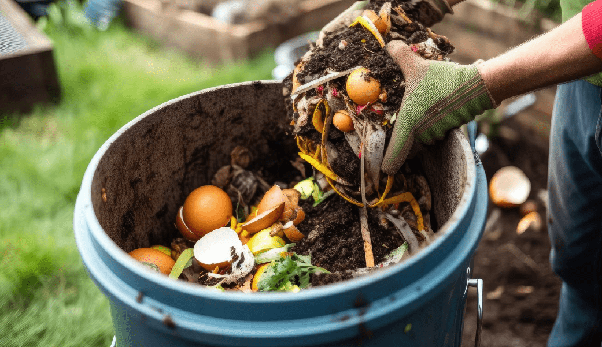
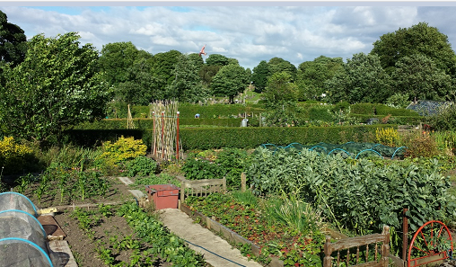

Participe das Oficinas
As oficinas foram pensadas para envolver crianças, jovens e adultos com temas relevantes para a integração campo-cidade, sustentabilidade e cultura local.

Compostagem Doméstica
Aprenda a transformar resíduos orgânicos em adubo rico para suas plantas.
Inscreva-se

Horta Urbana Sustentável
Descubra como cultivar temperos e hortaliças em pequenos espaços.
Ver mais.jpeg)